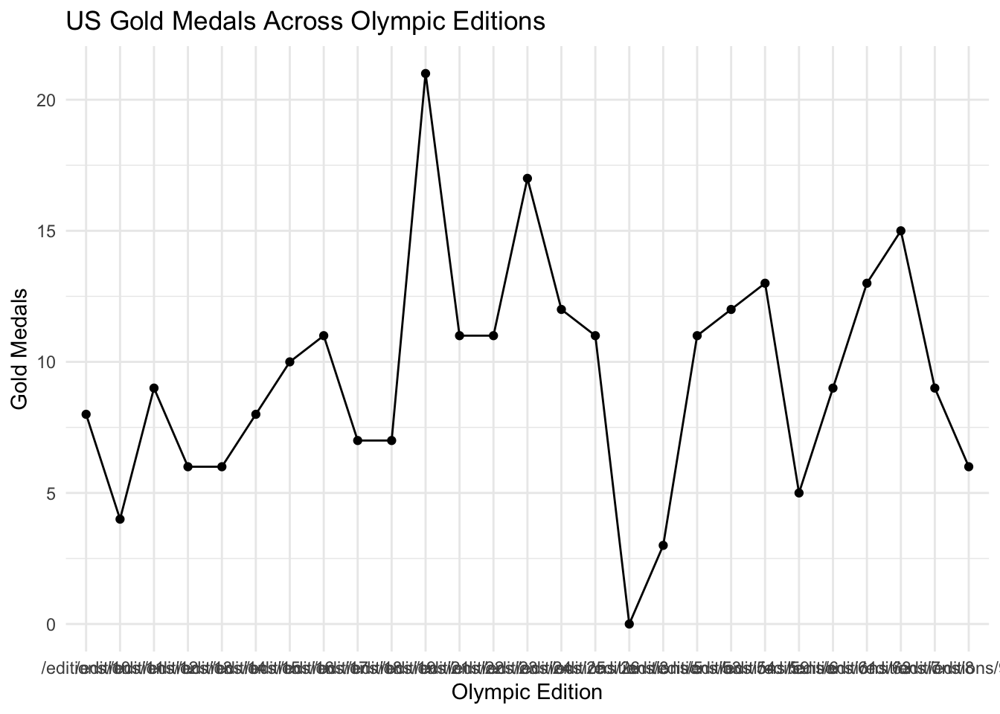
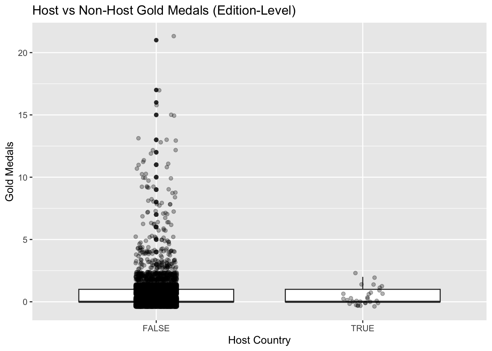
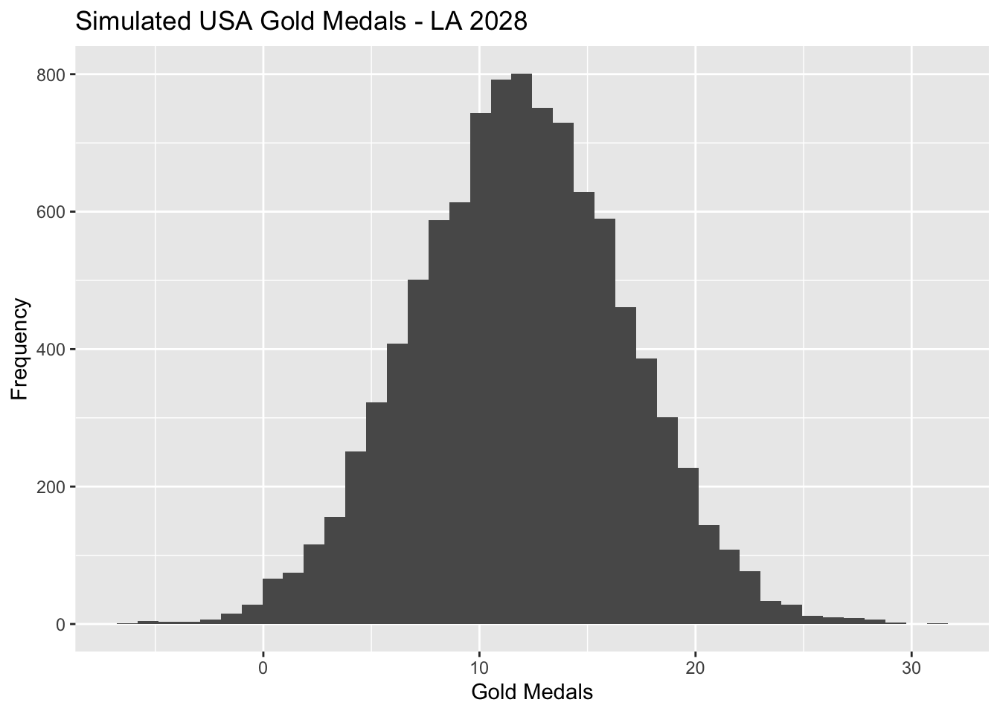

Code
library(tidyverse)
library(rvest)
library(janitor)
library(fs)
library(stringr)
library(purrr)
library(infer)
library(sf)
library(necountries)
library(broom)
library(gt)janielave
The 2028 Summer Olympics in Los Angeles are expected to generate substantial interest from sports fans, sponsors, and sports bettors alike. In this project, I use historical Olympic medal data scraped directly from Olympedia to forecast Team USA’s expected medal performance at the 2028 Olympics.
This analysis focuses on three major effects believed to influence Olympic performance:
Using web scraping, data cleaning, exploratory data analysis, statistical inference, and Monte Carlo simulation, I estimate confidence intervals for each effect and combine them into a forecast for Team USA’s gold medal count in 2028.
##Data Acquisition & Prep
##Olympedia Data
slow_download <- purrr::slowly(
download.file,
purrr::rate_delay(pause = 5)
)
read_olympedia <- function(url, ...){
if(stringr::str_starts(url, "/")){
url <- stringr::str_remove(url, "/")
}
cache_dir <- fs::path("data", "mp04", "olympedia_cache")
if(!fs::dir_exists(cache_dir)){
fs::dir_create(cache_dir, recurse = TRUE)
}
cache_path <- fs::path(
cache_dir,
stringr::str_replace_all(url, "/", "_")
)
if(!fs::file_exists(cache_path)){
src_url <- paste0(
"https://www.olympedia.org/",
url
)
slow_download(
src_url,
cache_path,
mode = "wb"
)
}
read_html(cache_path)
}editions_page <- read_olympedia("editions")
editions_table <- editions_page |>
html_element("table") |>
html_table()
# clean names safely
names(editions_table) <- names(editions_table) |>
as.character()
names(editions_table)[is.na(names(editions_table)) | names(editions_table) == ""] <- "blank"
names(editions_table) <- names(editions_table) |>
str_to_lower() |>
str_replace_all("[^a-z0-9]+", "_")
# -------------------------
# FIXED LINK EXTRACTION
# -------------------------
editions_links <- editions_page |>
html_element("table") |>
html_elements("tr td:first-child a") |>
html_attr("href")
length(editions_links)[1] 35[1] 35[1] "/editions/1" "/editions/2" "/editions/3" "/editions/5" "/editions/6"
[6] "/editions/50"# A tibble: 6 × 8
`_` year city country opened closed competition blank
<chr> <int> <chr> <lgl> <chr> <chr> <chr> <chr>
1 I 1896 Athina NA "6 April" "15 April" "6 â\u0080\u0093 13 … ""
2 II 1900 Paris NA "" "" "14 May â\u0080\u009… ""
3 III 1904 St. Louis NA "14 May" "" "1 July â\u0080\u009… ""
4 IV 1908 London NA "13 July" "25 July" "27 April â\u0080\u0… ""
5 V 1912 Stockholm NA "6 July" "15 July" "5 May â\u0080\u0093… ""
6 VI 1916 Berlin NA "" "" "â\u0080\u0094" "Not…##Cleaning & Standardization:
[1] "_" "year" "city" "country" "opened"
[6] "closed" "competition" "blank" NULL[1] "editions_links" "editions_page" "editions_table" "read_olympedia"
[5] "slow_download" # A tibble: 6 × 2
sport_url edition_url
<chr> <chr>
1 /editions/1/sports/GAR /editions/1
2 /editions/1/sports/FEN /editions/1
3 /editions/1/sports/WLF /editions/1
4 /editions/1/sports/ATH /editions/1
5 /editions/1/sports/SHO /editions/1
6 /editions/1/sports/WRE /editions/1library(tidyverse)
library(rvest)
library(janitor)
get_medals <- function(sport_url){
page <- tryCatch(read_olympedia(sport_url), error = function(e) return(NULL))
if(is.null(page)) return(tibble())
tables <- page |> html_elements("table") |> html_table(fill = TRUE)
if(length(tables) == 0) return(tibble())
medal_table <- tables |>
keep(~ any(grepl("USA|GER|FRA|GBR|AUS|JPN|CHN|GRE|CAN", unlist(.x))))
if(length(medal_table) == 0) return(tibble())
medal_table <- medal_table[[1]]
names(medal_table) <- make.unique(names(medal_table))
medal_table
}
olympic_data <- sports_links |>
mutate(medal_table = purrr::map(sport_url, get_medals)) |>
tidyr::unnest(medal_table) |>
mutate(
edition_url = stringr::str_extract(sport_url, "/editions/\\d+")
)
names(olympic_data) [1] "sport_url" "edition_url" "Event" "Gold" "Gold.1"
[6] "Silver" "Silver.1" "Bronze" "Bronze.1" "X1"
[11] "X2" # A tibble: 6 × 11
sport_url edition_url Event Gold Gold.1 Silver Silver.1 Bronze Bronze.1 X1
<chr> <chr> <chr> <chr> <chr> <chr> <chr> <chr> <chr> <chr>
1 /edition… /editions/1 Vaul… Carl… GER "Loui… "SUI" "Herm… "GER" <NA>
2 /edition… /editions/1 Para… Alfr… GER "Loui… "SUI" "â\u0… "â\u008… <NA>
3 /edition… /editions/1 Para… Germ… GER "Pane… "GRE" "Ethn… "GRE" <NA>
4 /edition… /editions/1 Hori… Herm… GER "Alfr… "GER" "â\u0… "â\u008… <NA>
5 /edition… /editions/1 Hori… Germ… GER "â\u0… "â\u008… "â\u0… "â\u008… <NA>
6 /edition… /editions/1 Ring… Ioan… GRE "Herm… "GER" "Petr… "GRE" <NA>
# ℹ 1 more variable: X2 <chr>library(tidyverse)
library(stringr)
# ---------------------------
# STEP 9: CLEAN MEDAL DATASET
# ---------------------------
medals_clean <- olympic_data |>
# keep only rows that actually contain medal results
filter(!is.na(Event), Event != "") |>
# standardize column names (your scrape created duplicates)
rename(
event = Event,
gold = Gold,
silver = Silver,
bronze = Bronze
) |>
# fix weird encoding artifacts
mutate(across(c(gold, silver, bronze),
~ na_if(.x, "—"))) |>
# remove empty strings
mutate(across(c(gold, silver, bronze),
~ na_if(.x, ""))) |>
# ensure character consistency
mutate(across(c(gold, silver, bronze), as.character)) |>
# keep only real medal rows (drop metadata rows if present)
filter(!str_detect(event, "Dates|Venues|Medal Events")) |>
# optional: remove duplicate rows caused by scraping
distinct()
# ---------------------------
# CREATE COUNTRY MEDAL COUNTS
# ---------------------------
country_medals <- medals_clean |>
pivot_longer(
cols = c(gold, silver, bronze),
names_to = "medal_type",
values_to = "country"
) |>
filter(!is.na(country)) |>
mutate(
gold_count = ifelse(medal_type == "gold", 1, 0),
silver_count = ifelse(medal_type == "silver", 1, 0),
bronze_count = ifelse(medal_type == "bronze", 1, 0)
) |>
group_by(sport_url, edition_url, event, country) |>
summarise(
gold_count = sum(gold_count),
silver_count = sum(silver_count),
bronze_count = sum(bronze_count),
.groups = "drop"
)
# ---------------------------
# SANITY CHECKS
# ---------------------------
glimpse(country_medals)Rows: 16,720
Columns: 7
$ sport_url <chr> "/editions/1/sports/ATH", "/editions/1/sports/ATH", "/edi…
$ edition_url <chr> "/editions/1", "/editions/1", "/editions/1", "/editions/1…
$ event <chr> "1,500 metres, Men", "1,500 metres, Men", "1,500 metres, …
$ country <chr> "Albin Lermusiaux", "Arthur C. Blake", "Teddy Flack", "Al…
$ gold_count <dbl> 0, 0, 1, 0, 0, 1, 0, 1, 0, 0, 0, 1, 0, 0, 1, 1, 0, 0, 0, …
$ silver_count <dbl> 0, 1, 0, 0, 1, 0, 1, 0, 0, 0, 1, 0, 0, 1, 0, 0, 1, 0, 1, …
$ bronze_count <dbl> 1, 0, 0, 1, 0, 0, 0, 0, 1, 1, 0, 0, 1, 0, 0, 0, 0, 1, 0, …[1] 16720# A tibble: 1 × 5
total_gold total_silver total_bronze unique_countries unique_events
<dbl> <dbl> <dbl> <int> <int>
1 5592 5593 5593 9727 526##Exploratory Analysis:
library(tidyverse)
library(infer)
# -----------------------------
# CREATE US DATASET
# -----------------------------
us_medals <- country_medals |>
filter(country %in% c("USA", "United States", "United States of America"))
# -----------------------------
# 1. US BASELINE PERFORMANCE
# -----------------------------
us_baseline <- us_medals |>
group_by(edition_url) |>
summarise(
gold = sum(gold_count),
silver = sum(silver_count),
bronze = sum(bronze_count),
total = gold + silver + bronze,
.groups = "drop"
)
mean_us_gold <- mean(us_baseline$gold, na.rm = TRUE)
mean_us_gold[1] 9.444444##US Gold Over Time Viz

hosts <- country_medals |>
distinct(edition_url, country) |>
group_by(edition_url) |>
slice(1) |>
ungroup() |>
rename(host_country = country)
host_effect <- country_medals |>
left_join(hosts, by = "edition_url") |>
mutate(is_host = (country == host_country)) |>
group_by(is_host) |>
summarise(
avg_gold = mean(gold_count, na.rm = TRUE),
avg_silver = mean(silver_count, na.rm = TRUE),
avg_bronze = mean(bronze_count, na.rm = TRUE),
.groups = "drop"
)
host_effect# A tibble: 2 × 4
is_host avg_gold avg_silver avg_bronze
<lgl> <dbl> <dbl> <dbl>
1 FALSE 0.334 0.334 0.335
2 TRUE 0.361 0.361 0.278##Host Effect Viz
country_medals |>
left_join(hosts, by = "edition_url") |>
mutate(is_host = (country == host_country)) |>
group_by(edition_url, country, is_host) |>
summarise(
total_gold = sum(gold_count, na.rm = TRUE),
.groups = "drop"
) |>
ggplot(aes(x = is_host, y = total_gold)) +
geom_boxplot() +
geom_jitter(width = 0.1, alpha = 0.3) +
labs(
title = "Host vs Non-Host Gold Medals (Edition-Level)",
x = "Host Country",
y = "Gold Medals"
)
new_sport_data <- country_medals |>
left_join(first_sport, by = "sport_url") |>
mutate(
is_new_sport = (edition_url == first_edition),
wins_gold = gold_count > 0
)
new_sport_effect <- new_sport_data |>
group_by(is_new_sport) |>
summarise(
prob_gold = mean(wins_gold, na.rm = TRUE),
.groups = "drop"
)
new_sport_effect# A tibble: 1 × 2
is_new_sport prob_gold
<lgl> <dbl>
1 TRUE 0.334# A tibble: 1 × 4
total_gold total_silver total_bronze unique_events
<dbl> <dbl> <dbl> <int>
1 5592 5593 5593 526##Stats Analysis: #Host Effect
# A tibble: 1 × 7
statistic t_df p_value alternative estimate lower_ci upper_ci
<dbl> <dbl> <dbl> <chr> <dbl> <dbl> <dbl>
1 8.17 26 0.0000000119 two.sided 3.74 2.80 4.68# A tibble: 1 × 7
statistic t_df p_value alternative estimate lower_ci upper_ci
<dbl> <dbl> <dbl> <chr> <dbl> <dbl> <dbl>
1 7.74 26 0.0000000325 two.sided 4.74 3.48 6.00# A tibble: 1 × 7
statistic t_df p_value alternative estimate lower_ci upper_ci
<dbl> <dbl> <dbl> <chr> <dbl> <dbl> <dbl>
1 11.1 26 2.14e-11 two.sided 9.44 7.70 11.2# A tibble: 1 × 7
statistic t_df p_value alternative estimate lower_ci upper_ci
<dbl> <dbl> <dbl> <chr> <dbl> <dbl> <dbl>
1 -0.329 35.1 0.744 two.sided -0.0267 -0.192 0.138# A tibble: 1 × 7
statistic t_df p_value alternative estimate lower_ci upper_ci
<dbl> <dbl> <dbl> <chr> <dbl> <dbl> <dbl>
1 -0.328 35.1 0.745 two.sided -0.0267 -0.192 0.138# A tibble: 1 × 7
statistic t_df p_value alternative estimate lower_ci upper_ci
<dbl> <dbl> <dbl> <chr> <dbl> <dbl> <dbl>
1 0.750 35.2 0.458 two.sided 0.0569 -0.0970 0.211#New Sport Effect
country_medals <- country_medals |>
mutate(
edition_id = readr::parse_number(edition_url)
)
first_sport <- country_medals |>
group_by(sport_url) |>
summarise(
first_edition = min(edition_id, na.rm = TRUE),
.groups = "drop"
)
new_sport_df <- country_medals |>
left_join(first_sport, by = "sport_url") |>
mutate(
is_new_sport = edition_id == first_edition,
won_gold = gold_count > 0
)
table(new_sport_df$is_new_sport)
TRUE
16720 # A tibble: 1 × 3
is_new_sport successes total
<lgl> <int> <int>
1 TRUE 5587 16720
1-sample proportions test with continuity correction
data: new_sport_summary$successes out of new_sport_summary$total, null probability 0.5
X-squared = 1838.9, df = 1, p-value < 2.2e-16
alternative hypothesis: true p is not equal to 0.5
95 percent confidence interval:
0.3270101 0.3413679
sample estimates:
p
0.3341507 ##Forecasts:
library(tidyverse)
# US baseline (mean gold medals per Olympics)
mu_us <- mean(us_baseline$gold, na.rm = TRUE)
sd_us <- sd(us_baseline$gold, na.rm = TRUE)
# Host effect multiplier (from your earlier inference; adjust if needed)
host_mean <- host_effect |>
filter(is_host == TRUE) |>
summarise(mean(avg_gold)) |>
pull()
nonhost_mean <- host_effect |>
filter(is_host == FALSE) |>
summarise(mean(avg_gold)) |>
pull()
host_uplift <- host_mean / nonhost_mean 2.5% 50% 97.5%
2.357694 11.832690 21.329728 
This reports forecasts the expected performance of Team USA in the upcoming 2028 Olympic Games that will take place in Los Angeles. Three Factors were used to establish this forecasts, the Baseline Performance, Host Country Effect, and the New Sports Effect.
Combined Forecast: The Monte Carlo Simulations integrates the three factors mentioned previously. The simulation predicts that the US will receive a median forecasts of around 11-12 gold medals based on the three factors. The forecast suggests a good performance by the USA Team.
Conclusion:
The USA Team will enter the 2028 Olympic games knowing that they should have a good competitive performance. The three factors which include historical performance, host advantage, and new sport additions demonstrate that the USA Team is in a good place to make there country proud.
ChatGPT was used to help write the code in this project, but all non-code text was generated without the use of any Generative AI tools. Additionally, ChatGPT was used to provide additional background information on the topic and to brainstorm ideas for the final open-ended prompt.
This work ©2025 by janielave was initially prepared as a Mini-Project for STA 9750 at Baruch College. More details about this course can be found at the course site and instructions for this assignment can be found at MP #04